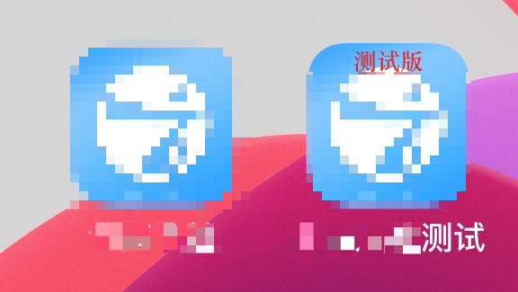
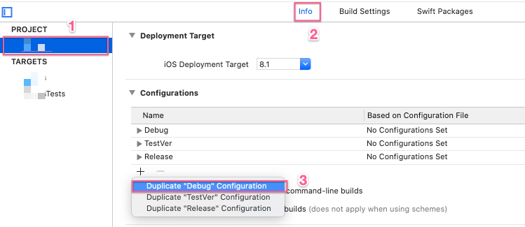

使用Xcode Configuration给一套代码展示不同图标和名称
引子
我们在开发一个项目中，会存在多个环境：开发环境，测试环境，正式环境。需要打出不同的安装包提供测试，这就需要不同的bundle id，并且最好是在手机上加以区分，app图标不同，app展示名称不同。
综上我们需要达成以下目标：
- 构建不同的宏来方便切换相应的配置
- 配置三种数据环境（开发、测试、正式）根据宏的切换进行切换
- 三种图标/应用名称根据宏的切换进行切换显示
- 至少两个类型的包能同时安装在手机上

解决方案
默认Xcode为每个target提供2个Build配置项(Build Configuration):Debug和Release。
一、创建多个Configure
下图是两种创建Configure的方式

二、数据环境的配置
新增了TestVer配置项之后，可以在当前Target的Build Setting下搜索macros找到Preprocessor Macros，可以看到我们刚刚Duplicate ‘Release’生成的TestVer的Multiple Value与Release的一模一样，这里我们需要新增TESTVER=1，来定义标示预发环境的宏变量TESTVER，主要是为了方便我们根据这里生成的宏在.pch文件中利用#ifdef来配置好相应的数据环境，这里同样可以将一些需要区分环境的第三方配置放进来，示意图及环境配置代码如下：
1 |
接着就可以在运行和打包模式下切换环境了
需要注意的问题:
正常情况下，以上步骤完成之后，如上图选择Edit Scheme切换Build Configuration就能编译出相应环境下的App，但是如果你的App使用pods来管理第三方库，使用新建的配置项就会报错找不到第三方的库文件。
原因是pods工程并未自动帮我们创建相应的pod配置项，发现这一点之后我手动创建了一个同样名为TestVer的pod配置项，于是编译通过了，但是打ipa包的时候始终通不过，继续查找原因，原来xcconfig文件需要终端执行pod install进行全面配置，所以大家在新建完了之后记得要pod install一下，才能放心使用。
三、配置不同的AppIcon
创建新的iOS App Icon并取名AppIconTestVer
然后再当前Target的Build Setting下搜索icon找到Asset Catalog App Icon Set Name，然后进行如下配置：
在Edit Scheme选择相应的Configuration进行编译或者打包就能打出不同的图标了。
四、配置不同的AppName
配置不同的应用名称，这里需要使用到User-Defined加上info.plist来进行配置；
首先，我们需要新增一个User-Defined，如下图：
将三种Configuration下的应用名分别设置。
然后在info.plist中加入Bundle display name，将其设置成我们刚刚新建的User-Defined:
可能出现的问题：
如果你的不小心引入了别的工程的InfoPlist.strings文件，它里面配置的bundle display name设置会覆盖掉你的User-Defined，使你的设置没有作用。
五、配置不同的Bundle ID
为了使打出来的三种包能够共同存在同一台手机上，我们需要像配置应用名称一样，新建一个User-Defined来根据不同的Configuration使用不同的Bundle ID打包。
配置方法与配置应用名称一致。
配置完成之后，同一个App就能够在一台手机上面安装多个不同的包。